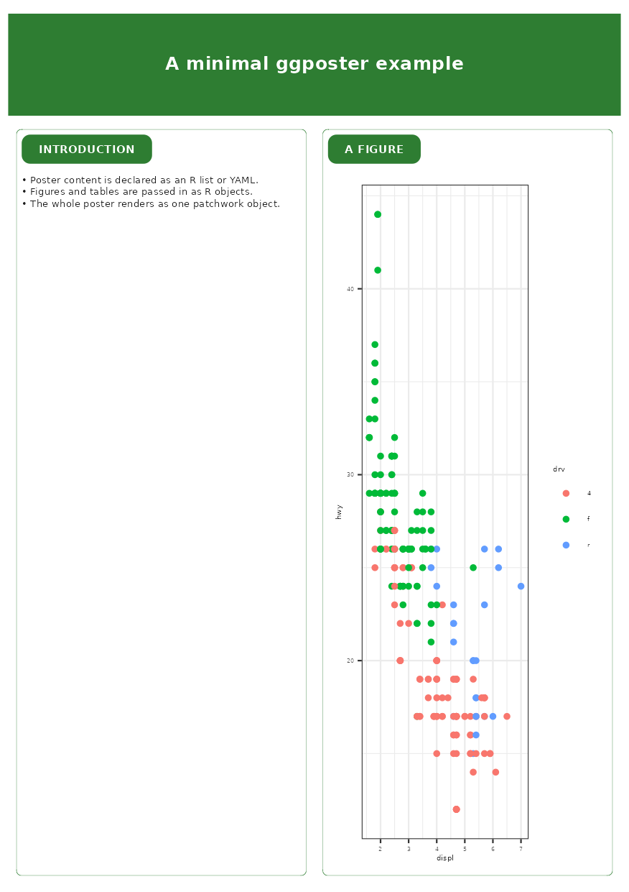
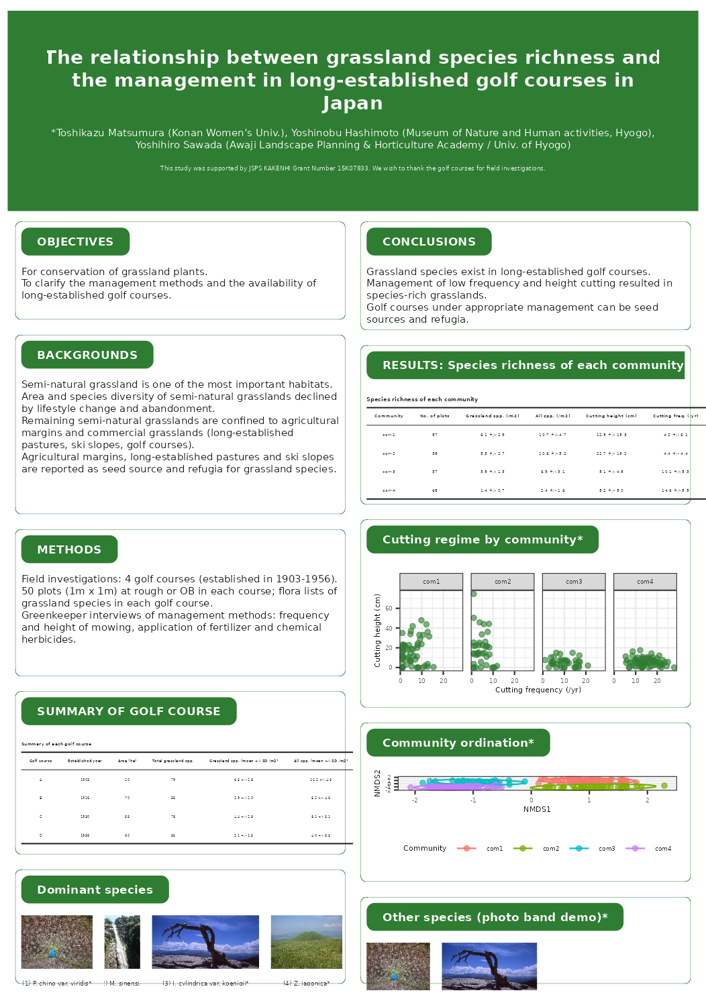

ggposter: build an A1 conference poster from ggplot2
Toshikazu Matsumura
2026-07-04
Source:vignettes/ggposter.Rmd
ggposter.RmdDesign
ggposter builds a poster declaratively: a theme
controls colours, fonts and spacing; a title band spans
the full width; and the rest of the poster is a set of
columns, each a vertical stack of
cards. A card is a rounded box with an accent-coloured
header tab and one piece of content – text, a table, a ggplot figure, or
a strip of photos. Every card is built as a plain [grid] grob, and the
whole poster is assembled with patchwork, so the same
building blocks work whether the content is a bullet list or a
ggplot.
Content and layout are described either as an R list, or as YAML read
by [read_poster_yaml()]. Figures, tables, and photos referenced from the
YAML are passed in separately as R objects
(objects = list(...)), so the YAML stays purely declarative
while data analysis stays in R.
A minimal poster
spec <- list(
title = list(title = "A minimal ggposter example"),
layout = list(left = "intro", right = "figure"),
sections = list(
intro = list(
header = "INTRODUCTION",
body = list(type = "text", md = c(
"- Poster content is declared as an R list or YAML.",
"- Figures and tables are passed in as R objects.",
"- The whole poster renders as one patchwork object."
))
),
figure = list(
header = "A FIGURE",
body = list(type = "figure", object = "fig")
)
)
)
fig <- ggplot(mpg, aes(displ, hwy, colour = drv)) +
geom_point() +
theme_bw()
p <- poster(spec, objects = list(fig = fig))p is a ggposter object – a thin wrapper
around the assembled patchwork. Font sizes and spacing are
absolute physical measurements sized for the poster’s true paper size,
so previewing at an arbitrary plot size (as this vignette must) needs a
scaled-down render rather than printing p directly:
render_poster(p, "ggposter-minimal-preview.png", scale = 0.25, dpi = 150)
knitr::include_graphics("ggposter-minimal-preview.png")
Save it at true size with [render_poster()]:
render_poster(p, "poster.pdf") # true A1 size, fonts embedded
render_poster(p, "preview.png", scale = 0.25, dpi = 150) # A4-ish previewContent types
Every section has a header (or NULL for no
header) and a body with a type:
-
"text"– a character vector of markdown-ish lines, rendered via [card_text()]. Lines starting with"- "become bulleted. -
"table"– a data.frame/tibble named inobjects, rendered via [card_table()] as a booktab-style table with an optional title/caption. The table’s font size is shrunk automatically to fit the column. -
"figure"– a ggplot object named inobjects, rendered via [card_figure()], re-themed to the poster’s base font size/family. -
"image"– one or more photo files, rendered via [card_image()] as a labelled row (e.g. a “dominant species” photo band).
Theming
[poster_theme()] controls the accent colour, fonts, corner radius, and spacing; [theme_green()] is a ready-made preset. Latin and CJK (Japanese) fonts are set independently, and [poster_font()] picks an installed family automatically so PDF export embeds real glyphs rather than falling back to a substitute:
th <- theme_green(base_size = 24, base_family = poster_font())
th
#>
#> ── poster_theme ────────────────────────────────────────────────────────────────
#> accent: #2E7D32
#> box_fill: #FFFFFF
#> box_border: #2E7D32
#> base_family: DejaVu Sans
#> cjk_family: DejaVu Sans
#> base_size: 24 pt
# For a Japanese poster, pick an installed CJK-capable family:
th_jp <- poster_theme(base_family = poster_font(cjk = TRUE))Reproducing a real poster
The following reproduces the layout and text of a real conference
poster (poster.pdf in this package’s development
repository): a full-width title band and a two-column body of rounded,
tab-headed cards for the introduction/background/methods on the left and
conclusions/results on the right.
The title, author list, funding note, and all body text and tables are transcribed verbatim from the original poster. The cutting-regime scatterplot and the community ordination plot are illustrative, generated from the reported per-community means and standard deviations (not the original point-level field data, which is not published in the poster). The photos are generic stock images bundled with the package, standing in for the original species photographs.
tbl_courses <- tibble::tribble(
~`Golf course`, ~`Established year`, ~`Area (ha)`, ~`Total grassland spp.`,
~`Grassland spp. (mean +/- SD /m2)`, ~`All spp. (mean +/- SD /m2)`,
"A", 1903, 20, 79, "6.5 +/- 2.8", "11.2 +/- 4.6",
"B", 1926, 70, 55, "2.9 +/- 2.0", "5.2 +/- 4.6",
"C", 1930, 55, 78, "4.4 +/- 2.8", "8.1 +/- 5.1",
"D", 1956, 60, 55, "2.1 +/- 1.5", "4.0 +/- 3.3"
)
tbl_community <- tibble::tribble(
~Community, ~`No. of plots`, ~`Grassland spp. (/m2)`, ~`All spp. (/m2)`,
~`Cutting height (cm)`, ~`Cutting freq. (/yr)`,
"com1", 57, "6.1 +/- 2.9", "10.7 +/- 4.7", "12.9 +/- 15.3", "4.2 +/- 6.1",
"com2", 38, "5.3 +/- 2.7", "10.6 +/- 5.2", "22.7 +/- 19.2", "4.4 +/- 4.4",
"com3", 37, "3.9 +/- 1.3", "6.9 +/- 3.1", "5.1 +/- 4.8", "10.1 +/- 5.3",
"com4", 68, "1.4 +/- 0.7", "2.4 +/- 1.6", "5.2 +/- 5.0", "14.6 +/- 5.5"
)
set.seed(42)
community_params <- tibble::tribble(
~Community, ~n, ~height_mean, ~height_sd, ~freq_mean, ~freq_sd,
"com1", 57, 12.9, 15.3, 4.2, 6.1,
"com2", 38, 22.7, 19.2, 4.4, 4.4,
"com3", 37, 5.1, 4.8, 10.1, 5.3,
"com4", 68, 5.2, 5.0, 14.6, 5.5
)
# illustrative points matching the reported mean +/- SD, not raw field data
df_cutting <- purrr::list_rbind(purrr::pmap(community_params, function(Community, n,
height_mean, height_sd,
freq_mean, freq_sd) {
tibble::tibble(
Community = Community,
cutting_height = pmax(0, rnorm(n, height_mean, height_sd)),
cutting_freq = pmax(1, rnorm(n, freq_mean, freq_sd))
)
}))
fig_cutting <- ggplot(df_cutting, aes(cutting_freq, cutting_height)) +
geom_point(alpha = 0.6, colour = "#2E7D32") +
facet_wrap(~Community, nrow = 1) +
labs(x = "Cutting frequency (/yr)", y = "Cutting height (cm)") +
theme_bw()
df_ord <- purrr::list_rbind(purrr::pmap(community_params, function(Community, n, ...) {
centre <- switch(Community,
com1 = c(1, 1), com2 = c(1, -1), com3 = c(-1, 0.5), com4 = c(-1.2, -1))
tibble::tibble(Community = Community,
NMDS1 = rnorm(n, centre[1], 0.4),
NMDS2 = rnorm(n, centre[2], 0.4))
}))
fig_ordination <- ggplot(df_ord, aes(NMDS1, NMDS2, colour = Community)) +
geom_point(alpha = 0.7) +
stat_ellipse() +
theme_bw() +
theme(legend.position = "bottom")The layout, theme, and section text live in a YAML file bundled with the package:
yml_path <- system.file("extdata", "poster_sample.yml", package = "ggposter")
cat(readLines(yml_path)[1:20], sep = "\n")
poster:
size: A1
orientation: portrait
theme:
accent: "#2E7D32"
base_size: 24
title:
title: "The relationship between grassland species richness and the management in long-established golf courses in Japan"
authors: "*Toshikazu Matsumura (Konan Women's Univ.), Yoshinobu Hashimoto (Museum of Nature and Human activities, Hyogo), Yoshihiro Sawada (Awaji Landscape Planning & Horticulture Academy / Univ. of Hyogo)"
funding: "This study was supported by JSPS KAKENHI Grant Number 15K07833. We wish to thank the golf courses for field investigations."
layout:
left: [objectives, backgrounds, methods, course_summary, dominant_species]
right: [conclusions, community_table, community_figure, ordination, other_species]
sections:
objectives:
header: "OBJECTIVES"Assembling and rendering:
sample_poster <- poster(
yml_path,
objects = list(
tbl_courses = tbl_courses, tbl_community = tbl_community,
fig_cutting = fig_cutting, fig_ordination = fig_ordination
),
theme = theme_green(base_size = 24),
base_dir = dirname(yml_path)
)
render_poster(sample_poster, "ggposter-sample-preview.png", scale = 0.3, dpi = 150)
knitr::include_graphics("ggposter-sample-preview.png")
render_poster(sample_poster, "sample_poster.pdf")